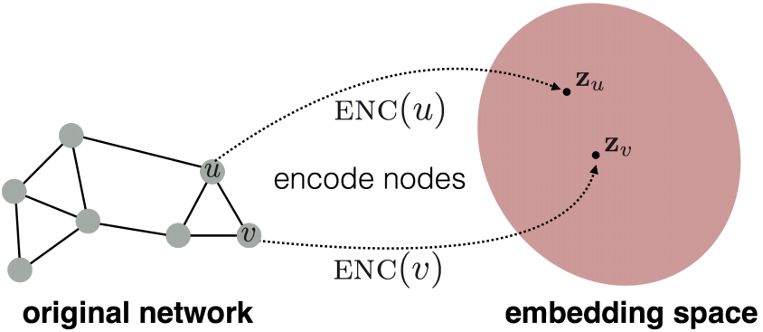
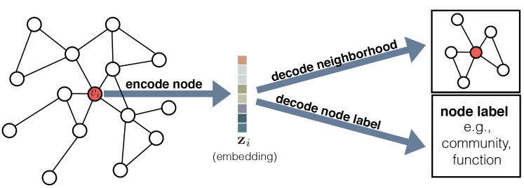
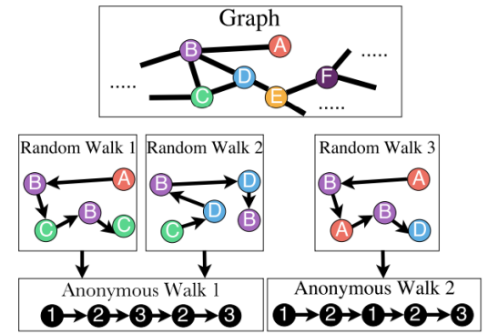

对于图机器学习，一个很重要的问题就是如何将图结构信息提取出来。在上一个Lecture，我们介绍了一些传统的hand-designed features，在这一节中，将引入图表示学习方法，图表示学习方法的目标是学习一个节点或图（or子图）到一个低维空间的映射关系，且这个映射空间中的几何关系能够反映原图的结构。
Overview
本文主要参考资料为CS224W的Lecture 3以及Graph Representation Learning的Chapter 3，课程视频可在Youtube观看。
Lecture 3: Node Embedding
对于图机器学习，一个很重要的问题就是如何将图结构信息提取出来。在上一个Lecture，我们介绍了一些传统的hand-designed features，在这一节中，将引入图表示学习方法，图表示学习方法的目标是学习一个节点或图（or子图）到一个低维空间的映射关系，且这个映射空间中的几何关系能够反映原图的结构。图表示学习与传统方法的主要区别为，在传统方法中我们将通过计算一些设计好的图上的统计量来提取结构特征的过程看做是一个预处理的步骤，而在图表示学习中，我们将提取特征这个问题本身也看做是一个机器学习问题，通过数据驱动的方法来学习如何encode图结构特征。
在node2vec这篇文章中有提到，我们可以将这一特征提取的过程与下行预测任务结合起来，一起来进行优化；也可以将特征提取与下行任务分割开来，单独对特征提取这一任务进行优化。本节课要介绍的node embedding的方法属于后者，是task-independent的。
从Encoder-Decoder的角度看Node Embedding
Node embedding是指将节点映射到一个低维空间中，且映射空间中的embeddings的相似性能够反映对应节点在原图中的相似性。

Node embedding主要包含两个映射函数，即将节点映射到低维空间的encoder，和利用低维node embeddings恢复原图的结构信息的decoder。这个encoder-decoder framework的intuition是：如果我们能够从低维node embeddings恢复原图的结构信息，那么大体上可认为这些embedding包含了下行机器学习任务所需要的必要信息。
Encoder
Encoder是将节点$v\in\mathcal{V}$映射到embedding vector$\mathbf{z}_v\in\mathbb{R}^d$的函数：
对于大部分node embedding的方法来说，encoder都是建立在shallow embedding上的，即映射函数为一乐lookup table：
其中$\mathbf{Z} \in \mathbb{R}^{|\mathcal{V}| \times d}$是一个包含了所有embedding的矩阵，$\mathbf{Z}[v]$表示节点$v$对应的$\mathbf{Z}$中的一行。
本节所讨论的encoder都属于shallow embedding，但也有其他的encoder，如后面会介绍的考虑了节点特征或局部图结构信息的图神经网络。
Decoder
Decoder的作用是根据encoder生成的embedding来恢复原图的信息，比如根据节点$u$的embedding来预测他的邻居节点或对节点进行分类等。

最常用的decoder是pairwise decoder：
其输入为一对node embeddings，输出是节点的相似性，pairwise decoder量化了原图不同节点间的相似性。
为了描述原图的相似性，我们还需要先定义原图上的相似性，$\mathbf{S}[u, v]$，最简单的我们可以将相邻的节点定义为相似的，即$\mathbf{S}[u, v] \triangleq \mathbf{A}[u, v]$，在本节后续也将介绍一些其他的相似性度量方法。根据定义好的相似性函数，我们的目标就是优化encoder和decoder使得reconstruction loss最小
对于训练集$\mathcal{D}$，Reconstruction loss的计算式如下
其中$ell$衡量了decoder给出的相似性与原图相似性的差别。根据decoder和相似性的定义不同，$\ell$可以设为MSE或cross entropy等。
基于随机游走的图嵌入方法
节点相似的定义有很多种，在这一部分，我们将介绍两种基于随机游走的方法：DeepWalk和node2vec，这类方法将同时出现在随机游走路径中的节点看作是相似的节点。DeepWalk和node2vec都用了shallow embedding并且都用了inner-product decoder。为了将decoder得到的相似性转化为概率，我们可以用softmax函数，即
其中$p_{\mathcal{G}, T}(v \mid u)$表示从$u$开始的长度为$T$的random walk包含节点$v$的概率。其对应的交叉熵损失函数为
然而，直接这样计算$\mathrm{DEC}\left(\mathbf{z}_{u}, \mathbf{z}_{v}\right)$的复杂度是很高的（由于softmax分母的求和）。
为了解决计算复杂度高的问题，DeepWalk采用了Hierarchical Softmax，而node2vec采用了negative sampling来近似softmax。另外，不同于DeepWalk走到不同节点的概率是平均的，node2vec可以引入超参数使得到不同节点的概率不平均，即有偏的随机游走，从而平衡深度优先与广度优先策略。
Embedding Entire Graphs
除了对节点进行embed，在一些应用graph level task中也需要对图进行embed，这里介绍三种方法：
1.对节点进行embed，直接将节点的embedding相加作为图的embedding；
2.引入一个新的节点，且该节点与子图中的所有节点向量，将该节点的node embedding作为子图的embedding;
3.匿名随机游走：根据节点出现的顺序进行编号，用得到的随机游走序列的概率分布来作为图的embedding，该embedding可以通过采样或学习得到。

Rference
William L Hamilton Graph Representation Learning
William L Hamilton, Rex Ying, Jure Leskovec Representation Learning on Graphs: Methods and Applications